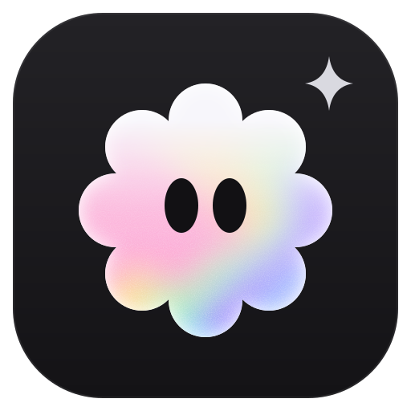

Visiblement
Glisse une vidéo ici · clic droit pour le menu
0:00
/
0:00
Frame
0
/
0
Enregistrer la frame sous…
Ctrl+S
Copier la frame
Ctrl+C
Éditer
Début de l'extrait ici
I
Fin de l'extrait ici
O
Effacer la sélection
Alt+X
Enregistrer l'extrait sous…
Ctrl+E
Ouvrir un fichier…
Ctrl+O
Afficher dans le dossier
Lecture / Pause
Espace
Plein écran
F
Quitter
Q